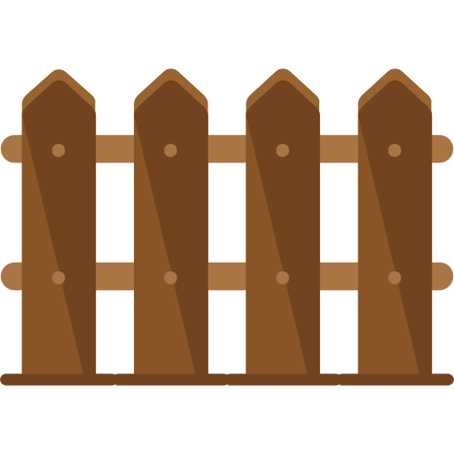
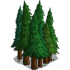
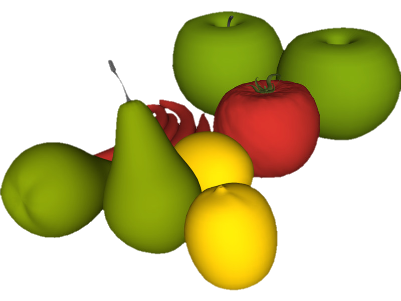
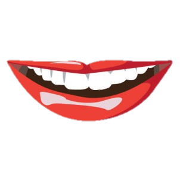
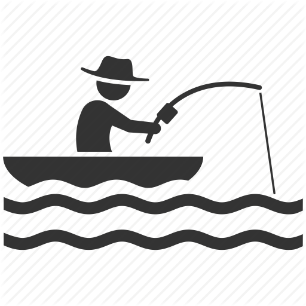

س 🌻 ع 🌻 ف 🌻 ص
نصيحة ❗ اضغطوا على الأزرار الموضحة لسماع نطق الكلمة
انتبهوا إلى كيفية نطق حرف الـ (سين) في بداية هذه الكلمات :
الصفالكنز

السياج 
لنتذكر من الدروس الماضية 😌 ما معنى كلمة ܗܶܕ݂ܪܳܐ ؟
و الآن مع حرف الـ (عين) 😊
الغيمةالعشب

الغابة 
هل تذكرون ما معنى كلمة ܙܡܺܝܪܬ݂ܳܐ ؟
ننتقل سويةً إلى حرف الـ (فِ) 🌸
انتبهوا للكلمات التالية و التي تبدأ به 🌸🌼 الفاكهة 
الفيل

الفم 
و حرفنا الأخير لهذا الدرس هو الـ (صُذِ) 🌻
الحقيبةالصياد 
الصورة

هل تعلمون 😍 أنه بدمج بعض الكلمات السريانية تنتج لنا كلمات جديدة مثلاً تعلمنا أن كلمة ܨܽܘܪܬܳܐ تعني (الصورة) و كلمة ܐܰܪܥܳܐ من الدرس الأول تعني (الأرض) و عند دمج الكلمتين سوية بهذه الطريقة ܨܽܘܪܰܬ ܐܰܪܥܳܐ تنتج لدينا كلمة جديدة تعني (الخريطة) و حرفياً (صورة الأرض) 😍🥳
و الآن نختتم الدرس مع بعض التمارين 😇
تنمو على أغصان الأشجار
يحيط بالمنزل و يحميه من دخول الغرباء
في القصص يكون مدفوناً بالغالب و يسعى إليه الأبطال و اللصوص
يصطاد الطيور و الأسماك
ثم يستخدمه ليأكل صيده
ماذا ندعو هذا الحيوان
لونه أخضر و تكتسي به الأرض
نلتقطها لنحتفظ بها بذكريات مميزة